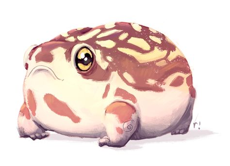

Жабки

Интересные факты про жабок
- На Земле живёт более 600 видов жаб
- Жабы — ночные наземные животные, входящие в воду лишь для откладывания яиц.
- Крупные жабы могут поедать мелких травянистых змей и ловить мышей.
- Плавательные перепонки у жаб есть только на задних лапках, передние лапы выполняют хватательные функции.
- Самые большие в мире жабы — жаба Бломберга (до 25 см) и ага (15–17 см).
- Летом жабы переходят к ночному образу жизни, охотясь и пополняя запасы воды только с наступлением темноты.

Жабы в разных культурах
- В Египте жаба была символом плодородия, её связывали с разливами Нила, от которого зависел урожай.
- В Китае жаба - символ богатства. Трёхлапая жаба (Чань Чу) изображается сидящей на стопке золотых монет и держащей одну во рту, часто с красными глазами и ноздрями.
- В Индии жаба участвует в магическом ритуале вызова дождя. Жители Кумаона (Северо-Западная Индия) подвешивают жабу за губу на верхушку длинного бамбукового шеста или дерева, чтобы вызвать дождь. Считается, что «поскольку жаба — водяной дух, Бог Дождя сжалится, глядя на её страдания, и пошлёт на землю дождь, чтобы спасти её».
- У славян в народных преданиях жаба выступает как олицетворение оберегающих домовых, о которых надо заботиться, чтобы в благодарность за это они принесли в дом счастье.
Информация:
А также:
- Про Лягушек
Написать автору